Afrikaans picture set — 71 icons
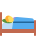
act_slaap
 animal_hoender
animal_hoender
 animal_hond
animal_hond
 animal_kat
animal_kat
 animal_vis
animal_vis
 animal_voel
animal_voel
 appel
appel
 bal
bal_blou
bal_geel
bal_rooi
body_hande
body_mond
bal
bal_blou
bal_geel
bal_rooi
body_hande
body_mond
 body_neus
body_neus
 body_oe
body_oe
 body_voete
body_voete
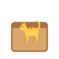
cat_in_box
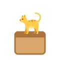
cat_on_box
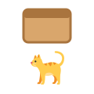
cat_under_box
clothes_broek
 clothes_hemp
clothes_hemp
 clothes_hoed
clothes_rok
clothes_skoene
colour_blou
colour_geel
colour_groen
colour_rooi
colour_swart
diagram_body_arm
clothes_hoed
clothes_rok
clothes_skoene
colour_blou
colour_geel
colour_groen
colour_rooi
colour_swart
diagram_body_arm
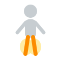
diagram_body_been
diagram_body_kop
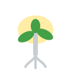
diagram_plant_blare
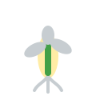
diagram_plant_stam
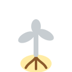
diagram_plant_wortel
 feel_bly
feel_bly
 feel_hartseer
feel_hartseer
 feel_kwaad
feel_moeg
feel_kwaad
feel_moeg
 food_appel
food_appel
 food_brood
food_brood
 food_eier
food_eier
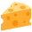
food_kaas
 food_koek
food_koek
 food_lemoen
food_lemoen
 food_piesang
food_vleis
food_piesang
food_vleis
 hond
hond
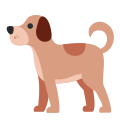
hond_groot
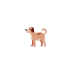
hond_klein
 kat
kat
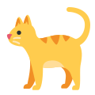
kat_groot
obj_deur
 obj_stoel
obj_venster
place_hospitaal
place_skool
obj_stoel
obj_venster
place_hospitaal
place_skool
 place_winkel
pos_in
place_winkel
pos_in
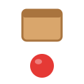
pos_onder
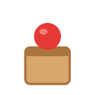
pos_op
 son_geel
trans_bus
son_geel
trans_bus
 trans_motor
trans_trein
trans_motor
trans_trein
 voel
voel
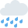
weather_reen
weather_sneeu
 weather_son
weather_son
 weather_wolk
weather_wolk
 wolk_wit
wolk_wit